Management Overview Dashboard
Allocation
The dashboard is available to the following responsibilities:
XXX Administrator Self Service (Payroll Approvals Not Required)
XXX Administrator Self Service (Payroll Approvals Required)
XXX BI Administration
XXX HR Administration
XXX HR Administration (With RA)
XXX HR Management
XXX Manager Self Service (Payroll Approvals Not Required)
XXX Manager Self Service (Payroll Approvals Required)
XXX Supervisor Self Service
XXX Supervisor Self Service (Limited Access)
Prompts
Absence Category
Absence Type (default value of ‘Sickness’)
Person Type(s) (default values 'Employee', 'Employee and Applicant')
Employee Person Type(s)
Assignment Category (Default exclude Bank, Honorary, Locum)
Assignment Status (Default exclude Terminate Assignment, Terminate Process Assignment)
Absence Target
Absence Period End Date
Excl. Open Sickness Absence from Appraisals- Start Date <=
Excl. New Starters from Appraisals (Months)
Review Date From
Review Date To
Review Type
Primary Assignments Only
Organisation Level 1-13
Staff Group
Employee Location
Role
Effective Date
Summary Tab
Description
This dashboard will provide high-level intelligence on a number of areas including:
-
Absence
-
Staff Movements
-
Compliance
-
Pay Bill
-
Staff in Post
-
Staff Requirements
Please Note: This dashboard also has a ‘tour’ or ‘wizard’ functionality (titled: First time using this dashboard?) which shows first time ESRBI users around the dashboard and explains the different objects commonly used e.g. prompts, analysis etc. The functionality currently works with browsers newer than Internet Explorer version 8 (IE8) therefore it is not available to IE8 browsers or older.
Gauge Prompts
Prof Reg Gauge High Value Prof Reg Gauge Low Value DBS Gauge Low Value DBS Gauge High Value |
Work Permit Gauge Low Value Work Permit Gauge High Value Appraisal Gauge Low Value Appraisal Gauge High Value |
Pay Bill Section
Payroll Period End Date Between (Default first day of month 3 months ago – last day of last month)
Pay Grade(s) (Default All AfC)
Absence Timeline
Description
This analysis provides a view of the absence rate for employees (restricted by Prompts) during the period selected. On the management overview dashboard, this is restricted to a rolling 12 month period, though this can be changed using the absence dashboard version. Overall Absence % (FTE), Absence Days, Absence (FTE) and Available (FTE) figures are also provided above the timeline to show an average Absence % (FTE), a total of Absence Days, the total Absence FTE and the total Available FTE for the period selected.
Data Items
| Title | Description |
|---|---|
| Absence Days | Total of calendar days for all absences for assignments included. |
| Absence FTE % | (FTE * Calendar Absence Days Lost) / (FTE * Calendar Days in Period) *100 |
| Rolling Absence FTE % | Running sum of (FTE * Calendar Absence Days Lost) / (FTE * Calendar Days in Period) *100 |
| Month | Month / Year |
| Absence Target | Driven by parameter. This should display a flat line on the chart. Numeric value. |
| Absence (FTE) | Total Absence FTE for the period selected |
| Available (FTE) | Total FTE available for the period selected |
| Staff Group | Staff Group linked to Job in Position |
Column Selectors
Show absence days, absence % (FTE) or rolling absence % (FTE). Default absence % (FTE).
View Selectors
Summary (Default)
Summary by Staff Group
Graph (Default)
Table
Example Screenshot
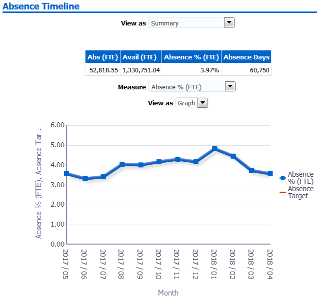
Actions
Click -> Absence Dashboard
Staff Movements Summary
Description
This analysis provides an overview of staff movements during a 3 month period (3 months prior to the current month). For example if the analysis is viewed in May 2013, then data for February, March and April will be returned. Measures included are:
-
FTE
-
Headcount
-
New Starters
-
Leavers
-
Turnover Rate
-
Employees on Maternity Leave
The figures included in this analysis are defined in the same way as the ‘NHS HR Dashboard’ reports available from Discoverer.
Data Items
| Title | Description |
|---|---|
| FTE | Total FTE of person records active at the last day of the month |
| Headcount | Number of person records active at the last day of the month |
| New Starters | Sum of employees whose hire date in the organisation falls in the month indicated. |
| Leavers | Sum of employees whose Actual Termination Date in the organization falls within the month indicated. |
| Turnover Rate | (Leavers/Headcount) * 100 (Monthly turnover rate) |
| Maternity Leave | Headcount where person has an Assignment Status of ‘Maternity/Adoption’. |
| Date | Month/Year Restricted to the previous 3 months (excluding the current month) |
Filters
Dates: Restrict to 3 months prior to current month. (e.g. if current month is March 2013, then December, January and February would be shown).
Include only:
Where Staff Group is ‘Medical and Dental’ and FTE <= 1.2
Or
Where Staff Group is not ‘Medical and Dental’ and FTE between 0.05 and 1.00
Example Screenshot
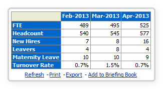
Period Turnover Rate
Description
This analysis provides an overview of the turnover rate for a selected period. Users are able to group the analysis by Staff Group.
Prompts
Date From
Date To
Data Items
| Title | Description |
|---|---|
| Period Turnover Rate | (Number of Leavers / Average Employee Headcount) * 100 |
| Staff Group | Staff Group associated with Job Role in position |
Example Screenshot
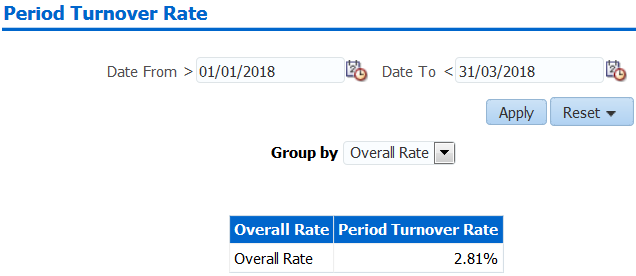
Staff in Post Summary
Description
This analysis shows the headcount or FTE restricted by the Prompts of the dashboard. The figures included in this analysis are defined in the same way as the ‘NHS HR Dashboard – Staff in Post’ report available from Discoverer.
Data Items
| Title | Description |
|---|---|
| Staff Group | Staff Group linked to Job in Position |
| Age Band | Age band of the person records incremented by 5 in each band |
| Assignment Status | Status from the Assignment Form |
| Occupation Code | Occupation code associated with the position |
| Headcount | Number of person records within the dashboard Prompts in each of the above dimensions |
| FTE | Total FTE for each group |
Column Selectors
Group by Staff Group, Age Band, Occupation Code or Assignment Status (Default Staff Group)
Measure Headcount or FTE (Default Headcount)
Filters
Include only:
Where Staff Group is ‘Medical and Dental’ and FTE <= 1.2
Or
Where Staff Group is not ‘Medical and Dental’ and FTE between 0.05 and 1.00
View Selector
View as Column Graph or Table (Default Graph)
Example Screenshot
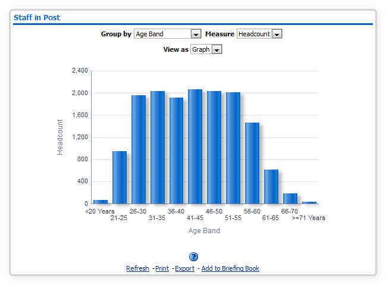
Learning Compliance
Description
This analysis is designed to show the number of competencies obtained as a percentage of those required by Staff Group. Please note that this analysis uses complex calculations and therefore may take longer to run than other analyses.
Prompts
Competency Framework(s) (Default: MAND,LOCAL,KSF,LANG, CSTF)
Competencies (Default: All)
Employee Hire Date <=
Exclude Open Sickness - Start Date <=
Data Items
| Title | Description |
|---|---|
| Staff Group | Staff Group linked to Job in Position |
| Assignment Count | Count of Distinct Assignment Number |
| Competencies Required | The number of competencies required for each position |
| Competencies Achieved | The number of competencies that are:
|
| Compliance % | Competencies Achieved / Competencies Required * 100 |
Filters
Include required competencies only.
Where multiple achievements of the same competency have been recorded, retrieve only the latest.
Include requirements where the required start date is less than or equal to the current date.
Include requirements where the required end date is greater than or equal to the current date or is null.
Example Screenshot
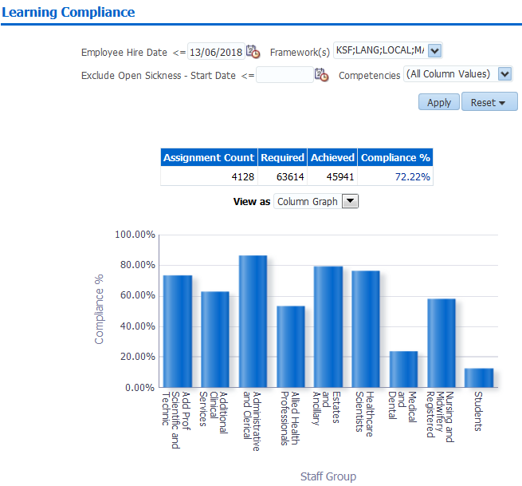
Actions
Click -> Navigate to Learning Compliance by Person
Pay Bill Summary
Description
This analysis shows the pay bill by summing the cost of each assignment and grouping by element group and AfC Pay Band. By default this analysis will display data from the previous 3 months, however prompts are provided to enable the user to vary this.
Data Items
| Title | Description |
|---|---|
| Pay Grade | Bands, (Band 8 split into relevant types) |
| Amount | Sum (Pay Values of assignments in Pay Band) |
| DoH Element Group | Nationally determined grouping of pay elements |
Filters
-
DoH Element Group Code is in: APA;AST;B;BASIC;BS;CEA;DA;DP;DPHS;GA;L;O;OA;OC;OT;PP;RRPG;RRPL;SW
-
Staff Group = ‘Medical and Dental’ AND FTE <= 1.2 OR Staff Group NOT ‘Medical and Dental’ and FTE between 0.05 and 1.00
Prompts
The user is able to select which pay grades are included. By default this includes AfC only, however the user is able to add in others if required.
View Selectors
Graph (Default)
Substantive Pay
Other Pay
Example Screenshot
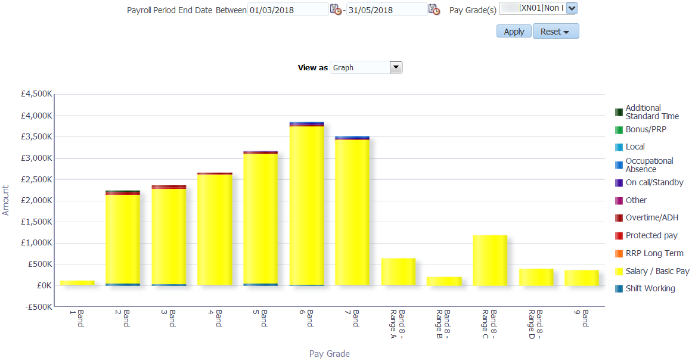
Actions
Click->Pay Bill Dashboard
Staff Requirements Summary
Description
This analysis shows an overview of the employment checks that staff have completed or achieved against a number of requirements placed against them or their position.
Data Items
| Title | Description |
|---|---|
| Headcount | As at today |
| Appraisals Completed | Distinct count of completed appraisals in the last 12 months. (e.g. if a person has 2 completed appraisals in the period, this should be counted only once). |
| Appraisal % | (Number of assignments with an appraisal review in the last 12 months / Headcount) * 100 |
| DBS Check % | (Number of assignments that require a DBS with a DBS check at the correct level recorded / Number of assignments with a DBS requirement) * 100 |
| Right to Work % | (Number of records with a Right to Work check recorded / Organisation Headcount ) * 100 |
| Prof Reg % | (Number of assignments that require a prof reg with a current (as at report run date) prof reg recorded / Number of assignments with a prof reg requirement) * 100 |
Formatting
Red: 0-60
Yellow 61-80
Green: 81-100
Parameters are provided to enable users to vary the above values for each gauge.
Example Screenshots
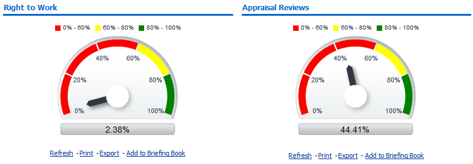
Staff List Tab
This tab is designed to help users obtain a quick staff list to export / print for generic use.
Prompts
Starting Organisation
Organisation
Staff Group
Assignment Category
Person Type
Employee Person Type
Assignment Status
Occupation Code
Primary Assignments Only
Effective Date
Recieve Printed Payslip/P60
Data Items
| Last Name | Position Title |
|---|---|
| First Name | Role |
| Title | Staff Group |
| Assignment Number | Pay Step Date |
| Fixed Term End Date | Fixed Term End Reason |
| Recieve Printed Payslip/P60 |
Example Screenshots
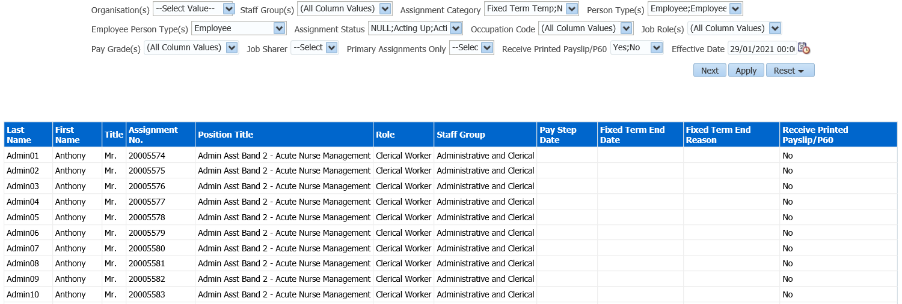
Printable Tab
This tab is designed to help users in creating a board report style dashboard which includes adding custom text and standardised print format. It contains the Staff in Post, Absence Timeline, Staff Movements, Learning Compliance and Standard KPIs from the Management Overview – Summary Tab. Users are able to add text and click the Save Narrative button to save text for printing. The analyses within this dashboard can be changed using a local version of the dashboard.
Example Screenshots
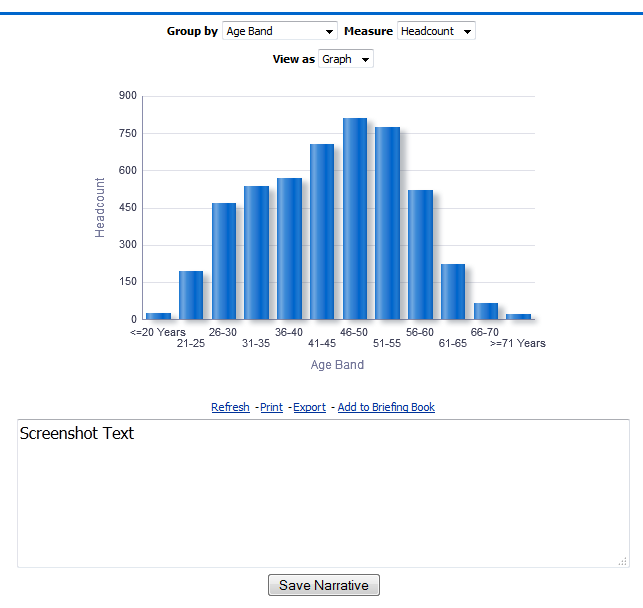
Scorecard
Description
This analysis is designed to show a range of KPIs against organisation levels. Measures included are Headcount, Absence FTE %, Turnover %, Compliance % and Appraisal %. Users can set custom RAG status thresholds using the RAG status prompts available.
Prompts:
Filter Turnover Measure Only by Job Role
Effective Date
Date From
Date To
Competency Framework(s)
Competencies
Define New Starters (Months)
Group By
Exclude Open-Ended Sickness – Start Date
Absence Red Value
Absence Green Value
Turnover Red Value
Turnover Green Value
Appraisal Red Value
Appraisal Red Value
Compliance Red Value
Compliance Green Value
View Selectors:
None
Action Links:
None
Data Items
| Org Levels 1-13 | Headcount |
|---|---|
| Absence % FTE | Turnover |
| Appraisal % | Compliance % |
Example Screenshot
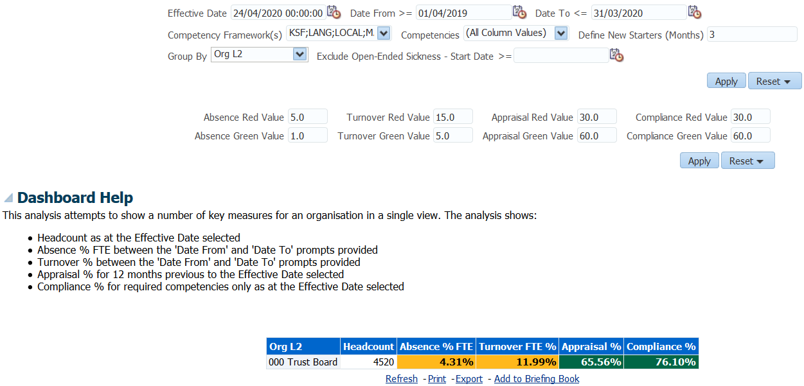
Scorecard Detail
Description
This analysis is designed to show a range of KPIs at assignment level. Measures included are Absence FTE % , Appraisal % and Compliance. Users can set custom RAG status thresholds using the RAG status prompts available.
Prompts:
Effective Date
Date From
Date To
Competency Framework(s)
Competencies
Define New Starters (Months)
Group By
Exclude Open-Ended Sickness – Start Date
Restrict to Employees at Effective Date (Yes/No) Default: No
Absence Red Value
Absence Green Value
Appraisal Red Value
Appraisal Red Value
Compliance Red Value
Compliance Green Value
Column Selectors:
Org Levels 1-13
Staff Group
Position Title
Role
Pay Scale
Data Items
| Employee Number | Next Grade Step Pay Affecting |
|---|---|
| Assignment Number | Absence % FTE |
| Employee Name | Appraisal % |
| Organisation | Compliance % |
| Latest Start Date | Open ER Case? (please see Dashboard Help for further detail) |
| Start Date in Grade | Org Levels 1-13 |
| Staff Group | Role |
| Position Title | Pay Scale |
| Pay Step Date |
Example Screenshot
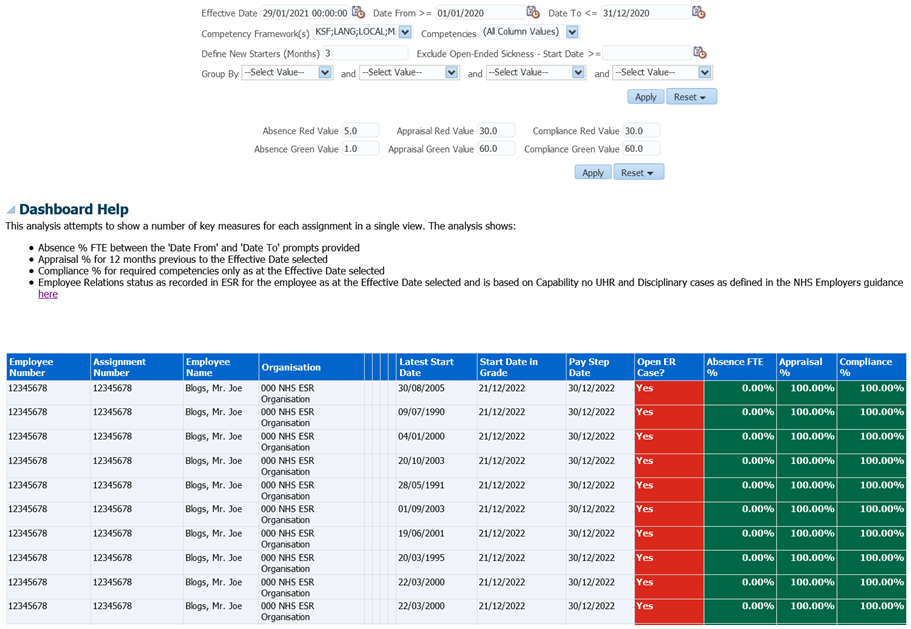